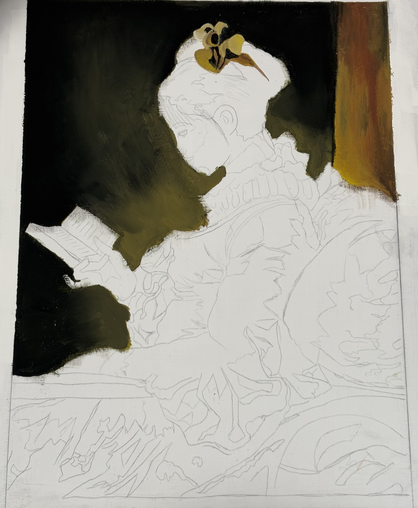

アナログ
油絵
制作期間
約2ヶ月
作品について
高校の絵画の授業で、自画像を描く課題で制作した油絵作品です。
使用ツール
油絵
制作の流れ

途中経過
ただ自画像を描くのではなく、既存の肖像画を調べて自画像風にアレンジするという内容だったため、ジャン＝オノレ・フラゴナールの名画「読書する娘」を題材に選んで描きました。
アナログ
約2ヶ月
高校の絵画の授業で、自画像を描く課題で制作した油絵作品です。
油絵

ただ自画像を描くのではなく、既存の肖像画を調べて自画像風にアレンジするという内容だったため、ジャン＝オノレ・フラゴナールの名画「読書する娘」を題材に選んで描きました。